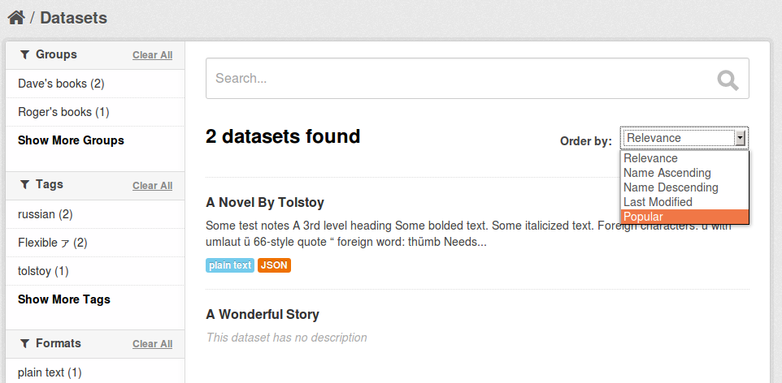
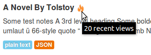
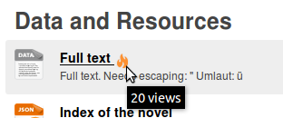

CKAN can track visits to pages of your site and use this tracking data to:
See also
To enable page view tracking:
Set ckan.tracking_enabled to true in the [app:main] section of your CKAN configuration file (e.g. development.ini or production.ini):
[app:main]
ckan.tracking_enabled = true
Save the file and restart your web server. CKAN will now record raw page view tracking data in your CKAN database as pages are viewed.
Setup a cron job to update the tracking summary data.
For operations based on the tracking data CKAN uses a summarised version of the data, not the raw tracking data that is recorded “live” as page views happen. The paster tracking update and paster search-index rebuild commands need to be run periodicially to update this tracking summary data.
You can setup a cron job to run these commands. On most UNIX systems you can setup a cron job by running crontab -e in a shell to edit your crontab file, and adding a line to the file to specify the new job. For more information run man crontab in a shell. For example, here is a crontab line to update the tracking data and rebuild the search index hourly:
@hourly /usr/lib/ckan/bin/paster --plugin=ckan tracking update -c /etc/ckan/production.ini && /usr/lib/ckan/bin/paster --plugin=ckan search-index rebuild -r -c /etc/ckan/production.ini
Replace /usr/lib/ckan/bin/ with the path to the bin directory of the virtualenv that you’ve installed CKAN into, and replace /etc/ckan/production.ini with the path to your CKAN configuration file.
The @hourly can be replaced with @daily, @weekly or @monthly.
Tracking summary data for datasets and resources is available in the dataset and resource dictionaries returned by, for example, the package_show() API:
"tracking_summary": {
"recent": 5,
"total": 15
},
This can be used, for example, by custom templates to show the number of views next to datasets and resources. A dataset or resource’s recent count is its number of views in the last 14 days, the total count is all of its tracked views (including recent ones).
You can also export tracking data for all datasets to a CSV file using the paster tracking export command. For details, run paster tracking -h.
Note
Repeatedly visiting the same page will not increase the page’s view count! Page view counting is limited to one view per user per page per day.
Once you’ve enabled page view tracking on your CKAN site, you can view datasets most-popular-first by selecting Popular from the Order by: dropdown on the dataset search page:
The datasets are sorted by their number of recent views.
You can retrieve datasets most-popular-first from the CKAN API by passing 'sort': 'views_recent desc' to the package_search() action. This could be used, for example, by a custom template to show a list of the most popular datasets on the site’s front page.
Tip
You can also sort datasets by total views rather than recent views. Pass 'sort': 'views_total desc' to the package_search() API, or use the URL /dataset?q=&sort=views_total+desc in the web interface.
Once you’ve enabled page view tracking on your CKAN site, popular datasets and resources (those with more than 10 views) will be highlighted with a “popular” badge and a tooltip showing the number of views:
 